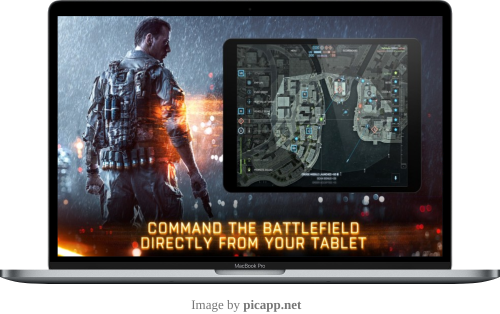

BattleConnect is a mobile Android app for managing and visualizing IOBT (interet of battlefield things) data. It is meant to be used on a tablet or smart watch by warfighters on the battlefield.

Background
The "Internet of things" (IOT) refers to a network of deviecs connected via the internet. These devices can range from home appliances to vehicles to sensors. IOBT refers to battlefied devices that are connected in a similar manner as traditional IOT devices. IOBT is becoming more pervasive in respect to the battlefied, as Russia utilized such technology against Ukraine in devastating fashion and China has ued such technology in impressive demonstrations. SAIC is attempting to catch the United States up to speed on this technology by providing a means for battlefield devices to stream and share their data.
Features
Receives alerts. Alerts are generated by the backend and targeted towards specific individuals.
Continuously transmits location to backend.
See nearby units on a map.
See members of own squad, nearby units, and locations of key members.